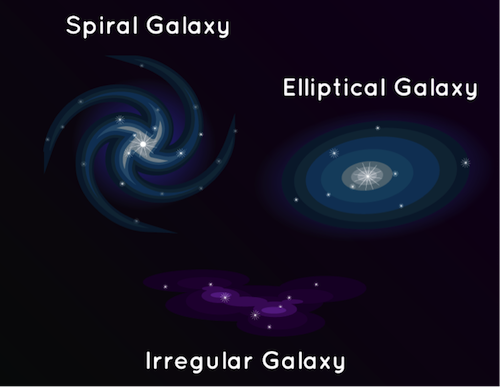

Milky Way Galaxy
There are many galaxies besides ours, though. There are so many, we can’t even count them all yet! The Hubble Space Telescope looked at a small patch of space for 12 days and found 10,000 galaxies, of all sizes, shapes, and colors. Some scientists think there could be as many as one hundred bilion galaxies in the universe.

This is a picture taken by the NASA’s James Webb Space Telescope showing thousands of galaxies. This image covers a patch of sky approximately the size of a grain of sand held at arm’s length by someone on the ground. The universe is a very big place! Credit: NASA, ESA, CSA, and STScI
Some galaxies are spiral-shaped like ours. They have curved arms that make it look like a pinwheel. Other galaxies are smooth and oval shaped. They’re called elliptical galaxies. And there are also galaxies that aren’t spirals or ovals. They have irregular shapes and look like blobs. The light that we see from each of these galaxies comes from the stars inside it.

Sometimes galaxies get too close and smash into each other. Our Milky Way galaxy will someday bump into Andromeda, our closest galactic neighbor. But don’t worry. It won’t happen for about five billion years. But even if it happened tomorrow, you might not notice. Galaxies are so big and spread out at the ends that even though galaxies bump into each other, the planets and solar systems often don’t get close to colliding.
What is a galaxy, anyway?
Our galaxy is a gravitationally bound collection of stars, swirling in a spiral through space. Based on the deepest images obtained so far, it’s one of about 2 trillion galaxies in the observable universe. Groups of them are bound into clusters of galaxies, and these into superclusters; the superclusters are arranged in immense sheets stretching across the universe, interspersed with dark voids and lending the whole a kind of spiderweb structure. Our galaxy probably contains 100 to 400 billion stars, and is about 100,000 light-years across. That sounds huge, and it is, at least until we start comparing it to other galaxies. Our neighboring Andromeda galaxy, for example, is some 220,000 light-years wide. Another galaxy, IC 1101, spans as much as 4 million light-years.

{kind=link}